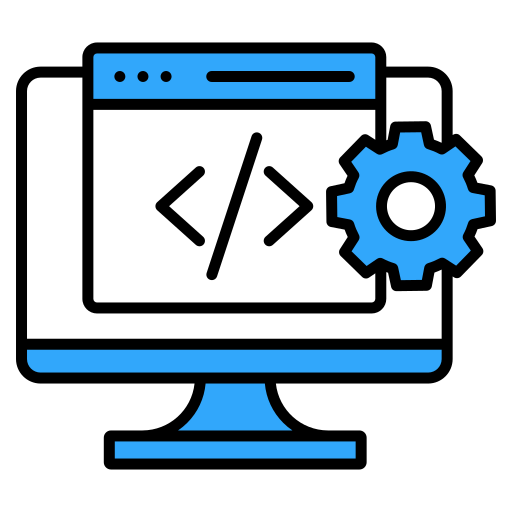

MY SKILLS
A GREEDY DEVELOPER

Python

Termux

WEB DEV

Race
About me
hi there , my name is saumya mishra and i'm an class 11 student from kv1 cantt shahjahanpur, my hobbies are singing, coding,maths and project planning. As you can see i had mastered Python language also it is the sub curriculum of 11th itself(opted CS). I had also participated in sports and won a bronze medal(Race) in school level, i do Python and some of my projects are birthday program using python , pattern program in python, i am also using termux, which is begginer friendly cli tool in android. I was also selected in govt polytechnic spn with cs branch. You can see my programming journey in github